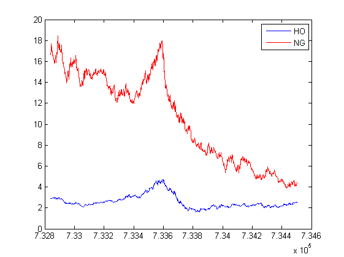
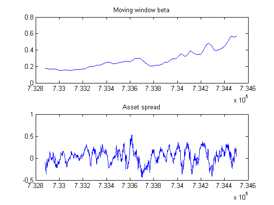
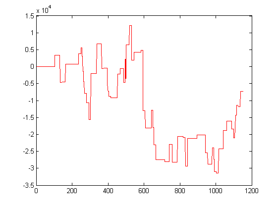
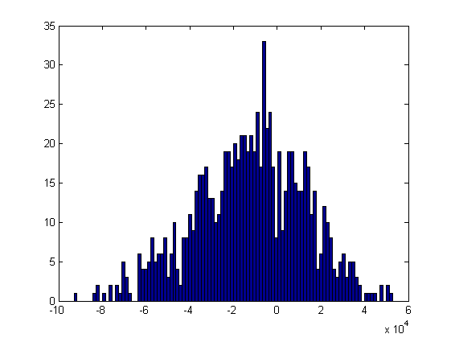
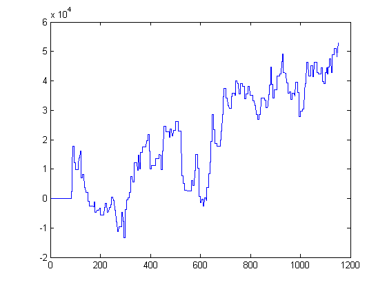

An example of pair trading using regressions
This example will show how we can backtest multi-asset trading, and optimise our strategy using the Parallel Computing toolbox.
The strategy we are going to implement is a simple mean reversion strategy for regression pairs.
Contents
Data
First of all, load in the data. We're taking some commodity futures data as our input, namely heating oil (HO) and natural gas (NG). The data was loaded in from a data provider, and contracts were rolled based on an algorithm that took open interest into account, then saved in a single CSV file for each asset.
assetOne = 'HO'; assetTwo = 'NG'; [d1 , ohlc1] = getOhlcData([assetOne '_DAILY.csv']); [d2 , ohlc2] = getOhlcData([assetTwo '_DAILY.csv']); close1 = ohlc1(:,OHLCdataset.CLOSE); close2 = ohlc2(:,OHLCdataset.CLOSE); % Make sure that the data matches on date [dates , close1 , close2] = matchDataOnDates(d1,close1,d2,close2); % Now plot the data figure; plot(dates , close1 , 'b' , dates , close2 , 'r'); legend('HO' , 'NG');
Contract specifciations
Each futures contract has different specifications for the contracts, such as contract multiplier, trading times etc. We read these in from the file bank.xml using the MATLAB Central contribution xml_read.
mktInfo = xml_read('bank.xml'); % These will be used for position sizing later on when we trade different % contracts in a pair cSpec1 = getContractSpecification(assetOne , mktInfo); cSpec2 = getContractSpecification(assetTwo , mktInfo);
Model
We are going to use a simple regression over a moving window which we will then use to generate a tradeable spread between the two assets.
We use the backslash / command to solve the system of equations $ \beta x = y$
% How many days is the window going to be? params.numDays = 30; [beta,spread] = movingWindowBetaCalculation(close1 , close2 , params.numDays); figure; subplot(2,1,1); plot(dates , beta); title('Moving window beta'); subplot(2,1,2); plot(dates , spread); title('Asset spread');
Trading the signal
We then want to trade the signal in the following way:
Take a moving average and moving standard deviation of the signal, then enter positions when our instantaneous spread is at least one sigma over the mean of the spread.
close all % Some parameters to set up - we will handle them in a structure. params.movAvgWindow = 60; % Length of the window for MA and STD params.stdDevWindow = 60; params.openPosition = 1.5; % open positions at mean +2 sigma params.closePosition = 0.5; % close positions mean +1 sigma params.stopLoss = 3; % stop loss at +3 sigma params.holdingPeriod = 15; % holding period of 15 days to wait for reversion % Call into the function signalSpreadTrade to generate the PnL [dates,pnl,trades] = signalSpreadTrade(dates , spread , beta , close1 , close2 , cSpec1 , cSpec2 , params); plot(cumsum(pnl) , 'r');
Optimising our backtest
We want to optimise the trading strategy over the following parameters
Regression window length Moving average/stdev window length opening sigma closing sigma stop loss sigma (> opening sigma) holding period
% We want to set up a grid of parameters to test over, and we are going to % send each backtest to a core of my local computer using the Parallel % Computing toolbox, then we choose a parameter set based this time on % max(pnl) % We are going to have the outer loop of the grid to be the number of days % for the regression window length... numDaysVec = 20:20:60; movAvgWindowVec = 20:20:60; openPositionVec = 1:0.5:2; closePositionVec = 0:0.5:1; stopLossVec = 3:1:5; holdingPeriodVec = 6:4:20; parComb = allcomb(movAvgWindowVec , openPositionVec , closePositionVec , stopLossVec , holdingPeriodVec); % For each specific regression window length, we have this many % combinations to test size(parComb , 1)
ans = 324
Parallelising the backtest
% Pre-allocate all the results sets for each of the individual runs parResults = cell(length(numDaysVec) , 1); % Open up a matlab pool disp('Opening up MATLAB pool') matlabpool local; % Run the first batch of runs to test how long ONE of them takes tic tmp = runBacktestBatch(numDaysVec(2) , parComb , dates , close1 , close2 , cSpec1 , cSpec2); toc % Send each batch of runs to a function that handles this parameter set tic allPar = []; for i = 1:length(numDaysVec) parResults{i} = runBacktestBatch(numDaysVec(i) , parComb , dates , close1 , close2 , cSpec1 , cSpec2); end toc % matlabpool close
Opening up MATLAB pool Starting matlabpool using the 'local' profile ... connected to 4 workers. Elapsed time is 19.472036 seconds. Elapsed time is 58.228461 seconds.
Visualise the results
Do a simple histogram plot of all the results
allPnl = []; for i = 1:length(parResults) allPnl = [allPnl ; parResults{i}]; allPar = [allPar ; repmat(numDaysVec(i) , size(parComb,1) , 1) parComb]; end figure; hist(allPnl , 100);
Find the best result
allPnl(isnan(allPnl)) = -Inf; [~,indx] = sort(allPnl , 'descend'); parVec = allPar(indx(1),:); params.numDays = parVec(1); params.movAvgWindow = parVec(2); params.stdDevWindow = parVec(2); params.openPosition = parVec(3); params.closePosition = parVec(4); params.stopLoss = parVec(5); params.holdingPeriod = parVec(6); % Call into the function signalSpreadTrade to generate the PnL pnl = createSignalAndSpreadTrade(dates , close1 , close2 , cSpec1 , cSpec2 , params); figure; plot(cumsum(pnl));